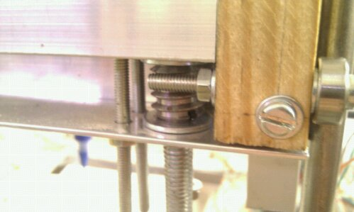
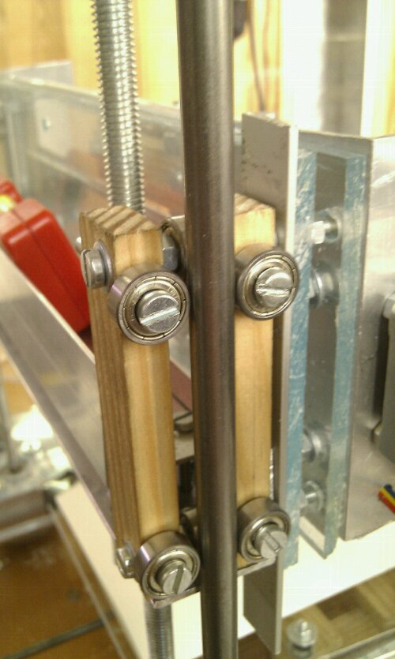
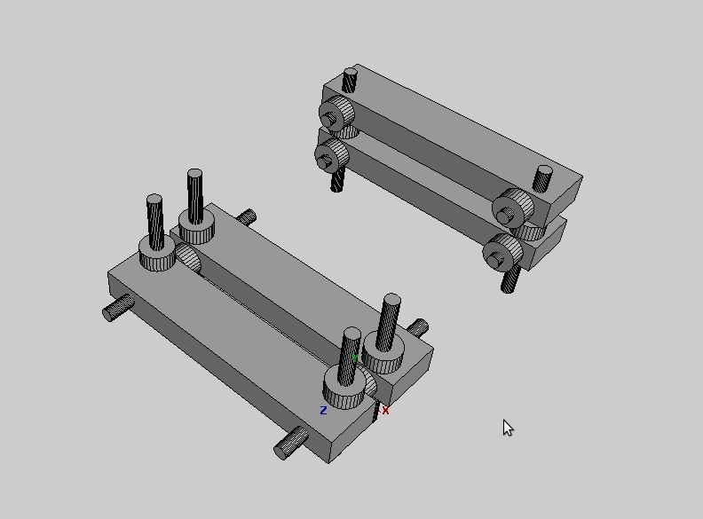

Kaosat.net
Gardener of code & plants: programming, 3d printing, Gardening, Aquaponics, & lots more
Building a repstrap (4) progress and problems

The project is still progressing at a good pace but a lot of smaller and bigger problems have also been cropping up : on some days it really seems like " solve one problem and 10 more will appear": Here is a rundown :
Progress:
done an almost complete wiring test (albeit temporary),
the controller arduino is now running the Reprap gcode interpreter software
did the first curvy/ more complex drawing tests and precision seems quite ok
for the "2d" tests I used the Inkscape to Gcode extension that you can get here + a cleanup program i did in python
since replicatorG would not work correctly I whipped up a very basic python program to send the Gcode commands to the arduino ( using a slightly modified version of the code I use for my HydroDuino project) I might add a (very) minimal interface and make it available , as its very simple to use for basic tests
completely trivial , but the sound of the steppers , in particular when drawing spirals, is really hypnotizing : i knew steppers had a certain "musical" quality to them (hence the many people using them to play a varierty of tunes, but still, quite nice)
it seems i have almost everything i need to start working on a pinch wheel extruder , except for the nichrome wire and a few bits and bob, so i will begin work on that pretty soon
{kind=link}
{kind=link}
Problems :
wiring is a mess so I will have to build a specific screw shield for the arduino, also the current "front-top" placement of the electronics is not practical at all so i might go back to this type of setup:
the vertical axis is acting up again and is driving me nuts ( and bolts...) there is a massive 4 fold speed difference between the up and down movement , some heavy squeaking from time to time and in the worse case of of the threaded rods detached from the motor!! No good!
- I am actually starting to wonder if the system i came up with to transmit the rotary movement to the axis platforms is at fault:
- 
- Or perhaps its is due to the axis bearing/rail system ? It is a generic piece that i can easily adjust ensuring a tight fit on both local axis, and very easy to build as-well
- 
on some axis the transparent aquarium tubing I use to attach the motor axis to the threaded rods detach from time to time...so I will have to change that aswell
on those axis where the bearings have even just 0.5 mm play with the rails, the wobble is noticeable
the last of the steppers i was still using, for the X axis stopped working reliably, but i anticipated that , and installed one of the newer but heaver steppers
there is something weird and worry some going on with the new steppers: whenever they are working, if i touch the stepper, or any part of the box, i just STOPS , as if it was suddenly grounded or whatever: i really do not know where this is coming from, i double checked all the wiring, and the circuits are already correctly grounded : perhaps the new steppers cables are not insulated properly ?
{kind=link}
{kind=link}
{kind=link}
{kind=link}
And for the usual "video bonus":